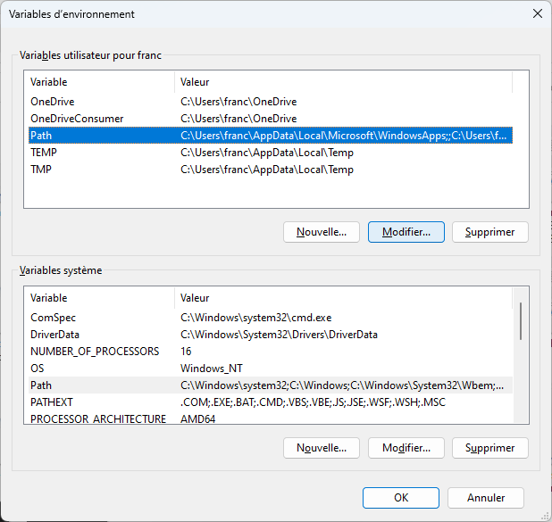

Utiliser le terminal
Une fois l'utilisation du terminal comprise (cela ne prend pas beaucoup de temps), le terminal qui vous fera gagner un temps fou.
Prompt
Lorsque l'on ouvre un terminal, on se retrouve devant un prompt. Ce prompt sera différent selon le terminal utilisé, mais il aura toujours la même fonction : on tape une ligne de commande et on appuie sur entrée pour l'exécuter. Cette ligne sera toujours :
- soit un fichier exécutable
- soit une instructions compréhensible par le terminal, comme
lspar exemple.
Une ligne de commande est toujours soit un fichier exécutable soit une instruction.
Les instructions sous différentes entre les systèmes Unix (Linux et Mac) qu'on appelle shell et le système Windows appelé powershell, mais il existe presque toujours un equivalent entre les instruction unix/mac et powershell :
Dossier courant
De plus un terminal est toujours positionné dans un dossier précis de votre arborescence de fichiers. C'est le dossier courant. L'exécution d'une ligne de commande se fera toujours par rapport à cet endroit.
Pour connaître l'endroit où est positionné le terminal, on peut utiliser la commande shell pwd.
Lorsque l'on ouvre un terminal, son dossier courant est souvent le dossier principal de l'utilisateur. Mais on a aussi vu que l'on pouvait aussi directement ouvrir un terminal dans un dossier spécifique.
Exécuter une commande
Le premier élément de la ligne de commande est un fichier qui doit être exécuté. Par exemple :
python mon_script.py
Comme le mot python n'est pas une instruction c'est forcément un fichier exécutable. Le système d'exploitation cherche alors un fichier s'appelant python (ou python.exe si on est sous windows) dans un ensemble de dossiers qu'on appelle le path.
Si le fichier python (ou python.exe si on est sous windows) n'est pas trouvé, le terminal rend une erreur.
S'il est trouvé, il est exécuté.
Souvent . (le répertoire courant) n'est pas dans le path. Il faut donc taper ./truc si on veut exécuter le fichier s'appelant truc dans le dossier courant.
Paramètres
Tout Ce qui suit l'instruction ou le fichier exécutable dans une ligne de commande sont les paramètres.
python mon_script.pyDans la ligne de commande précédente on a :
- un fichier à exécuter :
python - ses paramètres :
mon_script.py(quemon_script.pysoit également un fichier n'a aucune importance ici)
Les paramètres peuvent être très simple (comme ci-dessous) comme très compliqué. Par exemple : pandoc --mathjax --standalone --metadata pagetitle="titre page" --metadata charset="UTF-8" page.md -o page.html (tiré du tutorial pandoc)
Pour savoir quelles sont les paramètres possible, il faut regarder la documentation du fichier exécutable. Dans notre exemple documentation de la commande python nous indique que le paramètre mon_script.py correspond à un chemin relatif au dossier courant vers un fichier python à interpréter.
Pour que notre commande python mon_script.py soit exécutée sans erreur il faut donc :
- qu'un fichier exécutable nommé
python(oupython.exesous windows) soit présent dans un des dossiers du path - qu'il existe un fichier nommé
mon_script.pydans le dossier courant du terminal
Quelle commande ?
La commande exécutée d'une ligne de commande est un fichier présent dans le path. S'il existe plusieurs possibilités, c'est la 1ère rencontrée qui est utilisée. Il existe une commande shell pour déterminer le chemin absolu de la commande utilisée :
whichsous unix/mac.get-commandsous powershell
Ainsi which python sous unix/mac et get-command python sous powershell vont donner le chemin absolu vers le python utilisé.
Opérations sur les dossiers/fichiers
Opérations sur le dossier courant
Où ?
La commande shell pwd donne le dossier courant du terminal.
Changer le dossier courant
Pour changer de dossier courant, on utiliser la commande shell cd suivi d'un chemin absolu ou relatif vers un autre dossier.
Par exemple, sur mon mac, je crée un nouveau terminal. Par défaut, son dossier courant est la maison. La commande pwd me rend en effet : /Users/fbrucker.
Si je veux aller dans le dossier contenant ma plus belle photo d'Ada Lovelace, je peux taper :
- un chemin absolu :
cd /Users/fbrucker/Desktop - un chemin relatif :
cd Desktop, ou encorecd ./Desktop
Notez que je ne peux pas aller dans un fichier.
Si j'avais tapé /Users/fbrucker/Desktop/ada_lovelace.png j'aurais eu une erreur. Sur mon mac, ça dit : cd: not a directory: /Users/fbrucker/Desktop/ada_lovelace.png
Sous unix, le caractère ~ est équivalent au chemin absolu vers la maison. En tapant cd ~ je me retrouve alors directement à la maison. De là, cd ~/Desktop m'envoie dans le dossier /Users/fbrucker/Desktop quelque soit l'endroit où je me trouve.
Fichier et dossiers du dossier courant
La commande ls donne les dossiers et les fichiers du dossier courant.
La commande ls est en fait plus générale car on peut l'utiliser avec un paramètre qui est un chemin absolu ou relatif où lister les fichiers/dossiers. Par exemple, sur mon mac, si je tape :
ls /J'obtiens tous les dossier de la racine :
Applications Users cores home sbin var
Library Volumes dev opt tmp
System bin etc private usrLa commande ls a beaucoup de paramètres possible. Dans le monde du terminal, une commande va faire une unique chose mais de plein de façon disponible. C'est souvent ce qui fait peur, mais au final on utilisera jamais toutes les possibilités. Par exemple la documentation de la commande ls nous permet :
- afficher toutes les informations :
- unix/mac :
ls -l - powershell :
ls. L'instructionlssous powershell est équivalente àGet-ChildItem
- unix/mac :
- voir les fichiers cachés :
- unix/mac :
ls -a - powershell :
ls -Force
- unix/mac :
- voir tous les fichiers et récursivement :
ls -R. Si je veux voir tous les fichiers depuis la racine, je peux taper :s -R /(attention ça va prendre du temps...)ls -Depth 3. Sous powershell, il faut donner le nombre de récursion que 'on peut faire. Ici 3.
- ...
N'hésitez pas à aller voir la documentation :
- ls du powershell alias vers la commande
Get-ChildItem - ls unix
Création et suppression de fichiers/dossiers
Créer un dossier
Commande :
mkdir <chemin absolu ou relatif vers le dossier à créer>Par exemple : mkdir truc/chose crée le dossier chose dans le dossier truc lui même placé dans le dossier courant (si le dossier "./truc" n'existe pas, il y a une erreur)
Documentation :
- mkdir du powershell qui est un alias vers la commande
new-item - mkdir unix
Supprimer un fichier/dossier
rm <chemin absolu ou relatif vers le fichier à supprimer>
rm -r <chemin absolu ou relatif vers le dossier à supprimer>Documentation :
- rm du powershell redirige vers la commande
remove-item - rm unix La commande
rma beaucoup, beaucoup de paramètres possibles
On vérifie qu'on a compris
Faite le jeu ci-après (c'est un genre de MUD solitaire), fait pour comprendre et utiliser le terminal unix :
Les commandes que vous verrez sont toutes utilisables avec les terminaux Linux et Macos et la plupart fonctionnent également sous powershell (ou possèdent des équivalent, comme la commande cat qui est la commande Get-Content par exemple)
Path
Le path regroupe un ensemble de dossiers où le système ira regarder pour savoir quelle commande exécuter.
Connaître le path
Dans un terminal, tapez :
Windows 11
Windows 11
$env:Path
Systèmes Unix
Systèmes Unix
echo $PATH
Cela affichera les différents dossiers du path séparé par des :
:sous Unix;sous Windows
Modification du path
Dan un terminal, on peut modifier la variable contenant le path pour ajouter un dossier.
Par exemple, pour ajouter le dossier /users/franc/bin au début du path :
Système Windows 11
Système Windows 11
$env:Path = "C:\users\franc\bin;" + $env:Path
Ces modifications ne sont pas permanentes, elles ne sont valable que dans la fenêtre du terminal. Ouvrez une nouvelle fenêtre terminal et votre modification ne sera pas effectuée.
Modification permanente du path
On a parfois besoin de modifier de façon permanente le path. Les méthodes utilisées pour cela sont différentes sous unix/mac et windows.
Pour ceci, Il faut faire la modification précédente à chaque fois que l'on ouvre un terminal. Pour éviter de devoir taper la commande à chaque fois, on va l'ajouter au fichier de configuration du terminal.s
Ce ne sont pas des modifications courantes, on peut très bien essayer de s'en passer si la modification de fichiers de configuration fait un peu peur.
sous Windows 11
sous Windows 11
Depuis le menu démarrer, allez dans les paramètres puis dans informations système. Il faut ensuite cliquer sur Paramètres avancés du système :

Pour arriver à cette fenêtre :

En cliquant sur variables d'environnement vous pourrez modifier la variable PATH :

sous Macos
sous Macos
Par défaut le shell utilisé est zsh. Son fichier de configuration lu au login est un fichier nommé .zprofile qui est dans votre dossier personnel (la maison). Vous pouvez éditer ce fichier et ajouter la ligne de modification à la fin de celui-ci.
On peut aussi le faire directement avec la commande :
echo 'export PATH="/users/franc/bin:$PATH"' >> $HOME/.zprofile
Qui ajoute la ligne export PATH="/users/franc/bin:$PATH" à la fin du fichier .zprofile de la maison.
sous Linux/Ubuntu
sous Linux/Ubuntu
Par défaut le shell utilisé est bash. Son fichier de configuration lu au login est un fichier nommé `.bash_profile{.fichier} qui est dans votre dossier personnel (la maison). Vous pouvez éditer ce fichier et ajouter la ligne de modification à la fin de celui-ci.
On peut aussi le faire directement avec la commande :
echo 'export PATH="/users/franc/bin:$PATH"' >> $HOME/.bash_profile
Qui ajoute la ligne export PATH="/users/franc/bin:$PATH" à la fin du fichier .bash_profile de la maison.